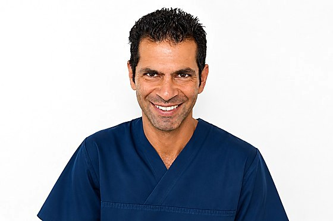
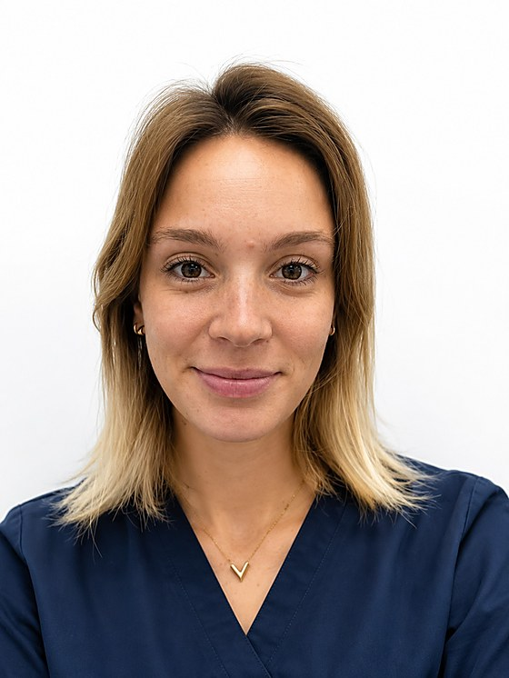
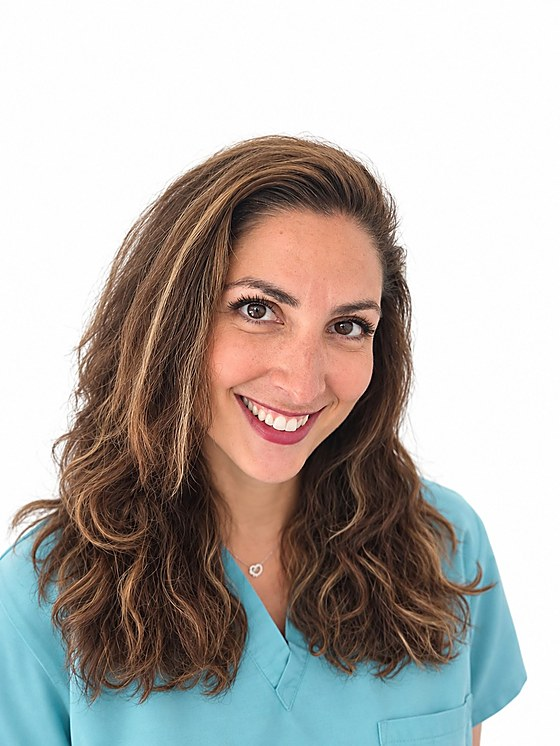

Une équipe expérimentée et à votre écoute
Le Dr Benjamin Darmon et son équipe vous accueillent avenue Daumesnil pour des soins dentaires, une implantologie et une esthétique du sourire pensées autour de votre confort et des données acquises de la science.
Dr Benjamin Darmon, chirurgien-dentiste implantologue
Diplômé de la Faculté de Chirurgie dentaire de Paris VII, le Dr Benjamin Darmon consacre son exercice à l’implantologie et à la chirurgie pré-implantaire depuis plus de 20 ans. Ancien responsable du certificat d’implantologie orale de l’Hôpital Saint-Antoine (2012–2022) et ancien membre du bureau de la Société Odontologique de Paris (2017–2023), il a également enseigné dans le cadre du DU d’implantologie de l’hôpital de la Pitié-Salpêtrière et présidé des congrès internationaux d’implantologie.
Chirurgien-dentiste inscrit à l’Ordre National des Chirurgiens-Dentistes.
Dr Benjamin Darmon, chirurgien-dentiste implantologue. 245 avenue Daumesnil, 75012 Paris. RPPS 10005137442.
Une prise en charge complète, de la prévention à l’implantologie
Implants dentaires
Remplacement d’une dent, de plusieurs dents ou d’une arcade complète par des implants, en alternative aux bridges et prothèses amovibles.
Découvrir l’implantologieProthèse dentaire
Couronnes céramique et zircone, bridges, prothèses amovibles : des réalisations françaises tracées, pensées pour l’esthétique et la fonction.
Découvrir la prothèseChirurgie pré-implantaire
Bilan osseux, augmentation des dimensions osseuses lorsque nécessaire : chaque plan de traitement est établi sur mesure avant la pose d’implant.
Découvrir la chirurgie pré-implantaireDeux chirurgiens-dentistes, deux assistantes, une même exigence
Formation continue, asepsie rigoureuse et écoute du patient guident chaque étape du plan de traitement.

Dr Benjamin Darmon
Chirurgien-dentiste, Implantologie
Dr Victoire Leclercq
Chirurgien-dentiste, Parodontologie
Salomé Journo
Assistante dentaire, prothésisteNadia Buta
Assistante dentaireCe que nos patients nous demandent souvent
Qu’est-ce qu’un implant dentaire ?
Un implant dentaire est une racine artificielle en titane placée dans l’os pour remplacer la racine d’une dent absente. Une fois intégré à l’os (ostéointegration), il sert de support à une couronne, un bridge ou une prothèse, pour retrouver une dent fixe et fonctionnelle.
Comment se déroule la pose d’un implant à Paris avec le Dr Darmon ?
L’implant est posé au cabinet sous anesthésie locale, après un bilan clinique et radiographique complet. Selon les cas, une greffe osseuse ou un sinus lift peuvent être nécessaires au préalable pour disposer d’un volume d’os suffisant. Après quelques semaines de cicatrisation, une couronne est fixée sur l’implant.
Comment prendre rendez-vous avec le Dr Benjamin Darmon ?
Vous pouvez réserver en ligne via Doctolib ou appeler directement le cabinet au 01 46 28 82 83. Le cabinet est situé au 245 avenue Daumesnil, Paris 12e, au pied du métro Michel Bizot.
Le cabinet pose-t-il des implants dentaires à Paris 12 ?
Oui, l’implantologie et la chirurgie pré-implantaire sont les domaines d’expertise du Dr Benjamin Darmon à Paris 12e. Ancien responsable du certificat d’implantologie orale de l’hôpital Saint-Antoine (2012–2022) et ancien membre du bureau de la Société Odontologique de Paris (SOP) de 2017 à 2023, il a également enseigné dans le cadre du DU d’implantologie de l’hôpital de la Pitié-Salpêtrière, assuré des séances au congrès de l’ADF, et présidé en tant que chairman de congrès internationaux d’implantologie.
Le cabinet est-il conventionné ?
Oui, le cabinet applique les tarifs conventionnés pour les soins courants. Les actes prothétiques et implantaires font l’objet d’un devis préalable, accepté par le patient avant toute réalisation.
Un projet d’implant ou une question sur vos soins ?
Le Dr Benjamin Darmon vous reçoit sur rendez-vous, 245 avenue Daumesnil, Paris 12e.